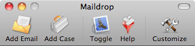
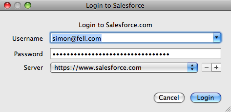
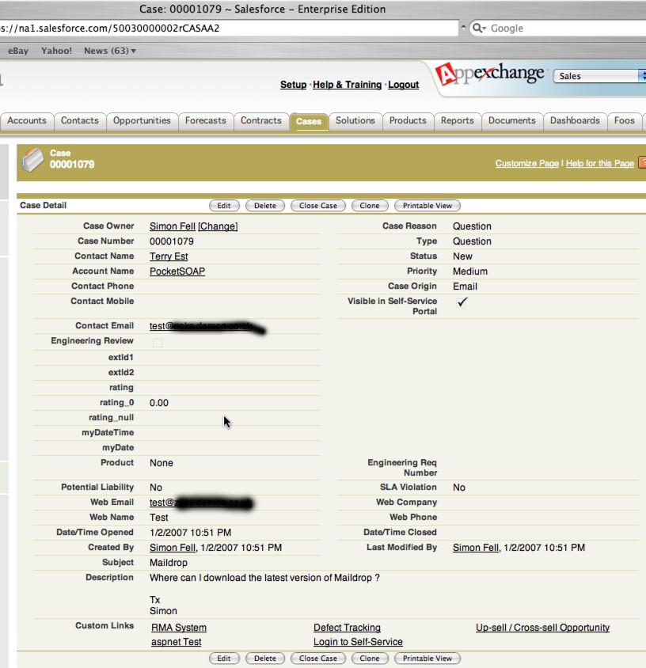

Entourage - Create a Case from an Email
You can easily create a new case in Salesforce.com from the selected email in Entourage.
- Select the relevant email in Entourage.

- From the Button bar, select "Add Case"
 - Login when prompted. (You'll only need to login the first time after Maildrop starts)
 - The Case is created and opened in your browser. If there is a contact with a matching email address,
then the case will be automatically associated with that contact.
